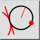

Εφαπτομένη, σημείο, ακτίνα
Γραμμή εργαλείων / Εικονίδιο:


Μενού: Σχεδίαση > Κύκλος > Εφαπτομένη, σημείο, ακτίνα
Συντόμευση: C, T, P
Εντολές: circletangentpointradius | ctp
Πρόκειται για αυτόματη μετάφραση.
Γραμμή εργαλείων / Εικονίδιο:


Σχεδιάζει ένα τόξο με δοθείσα ακτίνα, εφαπτόμενο σε μια οντότητα και διερχόμενο από ένα σημείο.